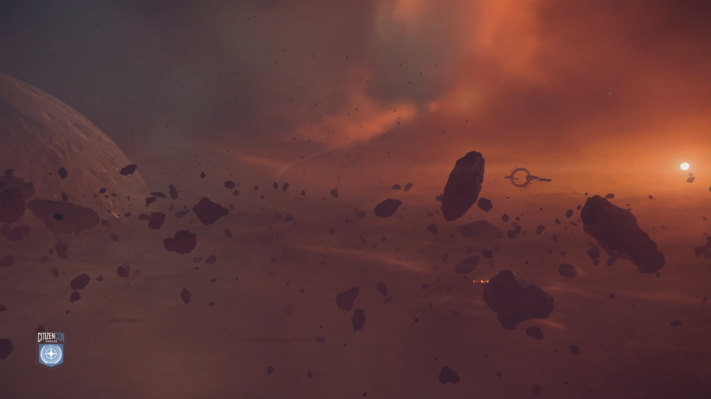
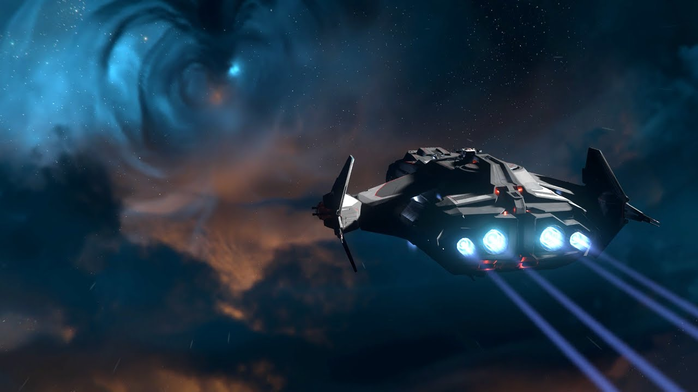
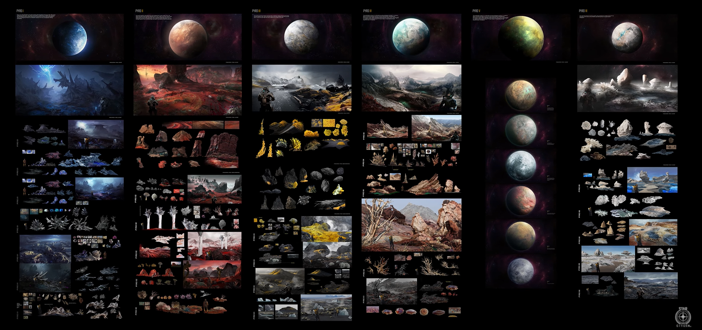
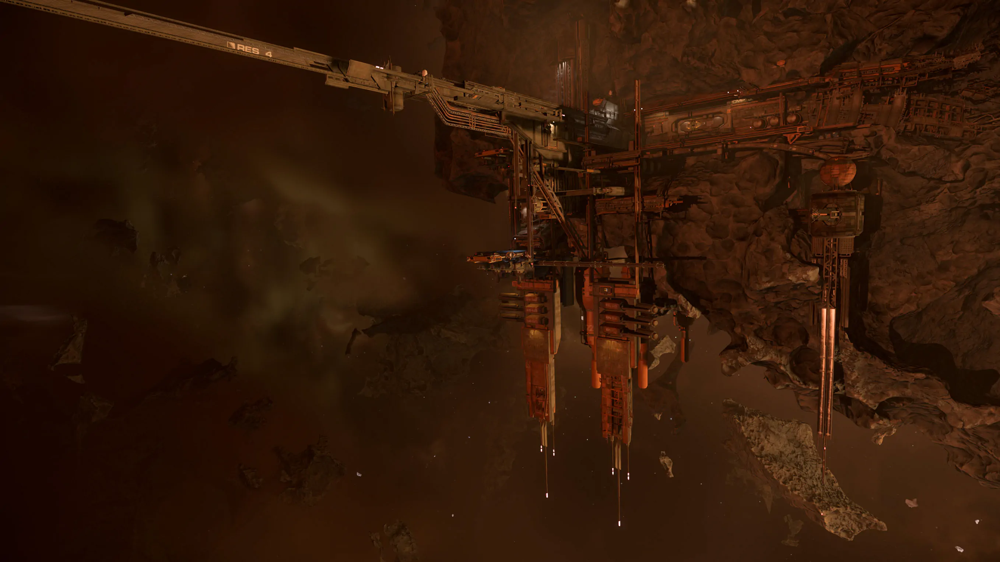
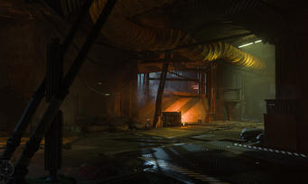
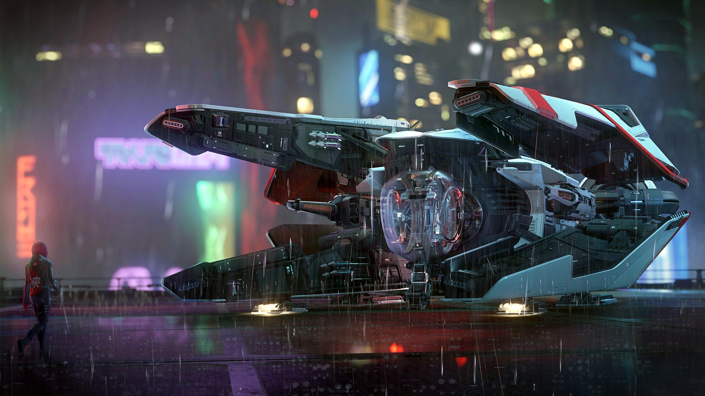

Aktuális Patch Ismertető
Star Citizen Alpha 4.0 újdonságai
Az alábbiakban a 4.0-ás verzió legfontosabb újításai és változásai:
- Pyro rendszer bevezetése: Az első új csillagrendszer a Stanton után, amely egy vad, törvénytelen terület, tele elhagyatott állomásokkal és veszélyes környezettel.
- Server Meshing (első verzió): Statikus szerverhálózat implementálása, amely lehetővé teszi a nagyobb játékosszámú szervereket és a zökkenőmentes átmenetet a Stanton és Pyro rendszerek között (jump point: Stanton - Pyro).
- Új bolygók és holdak: A Pyro rendszerben új bolygók (pl. Pyro I, Pyro II "Monox") és holdak, sajátos környezeti jellemzőkkel, mint például extrém időjárás és mérgező légkör.
- Asteroida létesítmények: Bányászható és felfedezhető aszteroida bázisok a Pyro rendszerben.
- Contested zónák: Harci és kereskedelmi hotspotok, ahol a játékosok versenghetnek az erőforrásokért,illetve táblákat gyüjthetnek az Executive Hangárhoz.
- Mirai Guardian: Új hajó bevezetése, amelyet a patch részeként mutattak be.
- Gazdasági átdolgozás: Átfogó egyensúlyi változtatások a kereskedelemben, például a hajók rakományának ritkább extrém értékei (pl. WiDoW-val teli Hull A), valamint a járműkomponensek és fegyverek árainak újrakalibrálása.





